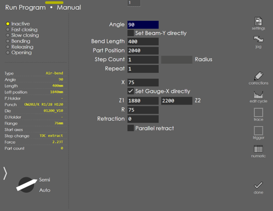

Manual Program
Manual Program is used to run single bend with different tools and target. By default, this is turned off. It is available only when Settings → Other Settings → Machine Settings → General Parameters → Display → Allow manual programming is turned ON. Last run tool setup can be used, or tools can be changed through Settings.

Settings
Touch the Settings button on the right to bring up the Part Settings dialog where you can configure the settings like material, thickness, punch, die etc.
Jog
Tap the Jog button to bring up the Axis Jog Panel. This allows the user to freely move all the gauge axes using either the handwheel, or by holding down the jog buttons. From this panel, one can record the position of the gauges directly into the program by tapping the teach button there.
Corrections
Touch the corrections button to bring up the adjustment screen using which you can tweak bend angles after making a test piece and measuring the actual angles. You can also perform gauge adjustments by pressing the corresponding button in the Corrections dialog. See the section on Corrections for more details.
Cycle Editing
Touch the Edit Cycle button to bring up the bend cycle editor. This can be used to control the bending cycle position and speed. See the section on Cycle Editing for more details.
Numeric Panel
Touch the Numeric button to bring up the Numeric Panel. See Numeric Panel for more details.